准备工作：
a 先用分区软件准备好一个安装系统的分区；（可以使用无Acronis Disk Director 11 ）
b xp的安装需要先有序列号，而win可先安装然后再激活；
c 安装前相关驱动备份（用驱动精灵或优化大师）；
相关帐户设置、软件设置、文件的备份（用windows轻松传送）；
流程
微软原版Windows XP pro with sp3 VOL(601.04MB)
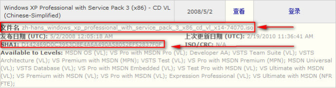
这是最经典也是我最喜爱的操作系统之一。我在MSDN（微软开发者网络）的网站上查到的。
下载后，请用MD5、SHA1_值校验工具（点此下载MD5、SHA1_值校验工具）验证一下MD5值。

序列号:MRX3F-47B9T-2487J-KWKMF-RPWBY
 (PT种子下载)
(PT种子下载)
微软Windows SP3专业黄金企业版.iso(625.8MB)
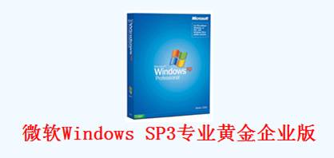
序列号： MRX3F-47B9T-2487J-KWKMF-RPWBY
(592.56MB)
Windows XP SP2上海政府大客户版
winxp sp2 vol 592M，这是官方出品的，那些575M.621M,681M.683M.699M 703M 等等都是自己集成的。
网上的XP SP2的上海政府版VLK的,大多都是同一个文件683M的，很多网友反应这是在SP1基础上集成的SP2的版本。而真正上海政府版应该是只集成SP2，里面好像没有SP1的痕迹，而且运行起来速度很快，而且很稳定（不容易出错）！,真正的VOL版本，没有激活概念，可以无限升级，序列号也不一样。
此光盘镜象是没有改动过任何文件的官方简体中文VOL版本，真正包含SP2的官方原版XP，无需激活。建议参考根目录下support\\tools的DEPLOY.CAB，已正确显示为SP2（如果是集成版则是SP1或2600）。
DOS下安装：要使用 Smartdrv.exe 工具，请确保 Smartdrv.exe 文件位于启动盘。
介绍：
1、光盘卷标VRMPVOL_CN
2、WinXP原版镜像文件大小592M
3、其实下载的时候显示552M（因为是真正纯净的上海政府版XP）
4、总目录数：160；总文件数：6875； 总容量：639461499；
5、MD5验证码：2637e695f43329fc9d66feceee44bf1f
6、EULAID：XPSP2_RM.0_PRO_RTL_CN (i386文件夹里有一个eula.txt，最后有一行EULAID)
7、系统信息:地区因改显示的是“中华人民共和国”而不是“中国”
8、CD-KEY: DG8FV-B9TKY-FRT9J-6CRCC-XPQ4G（这个key经我测试已不能通过验证，请选用其他key）
序列号:MRX3F-47B9T-2487J-KWKMF-RPWBY
序列号:DG8FV-B9TKY-FRT9J-6CRCC-XPQ4G
直接点击下载：
===============================================================================
WinXP补丁包|Windows XP SP3更新补丁汇总
CPU 相关更新程序(3个)
非高优先级更新程序(4个)
高优先级更新程序(106个)
WMP10 安装及其相关更新程序(9个)
其他更新程序(3个)
更新 Adobe Flash Player for (Internet Explorer & AOL) 至10.2.152.32正式版
更新 DirectX至2010.6月版
安装程序会自动检测跳过系统已安装的更新程序。支持 nLite 集成系统的更新程序自动检测！
确保安装完后系统状态和原版自动升级结果完全一致！
注意事项：
1.由于使用迅雷下载时，会下载到旧版文件。请在下载任务中勾选“只从原始地址下载”或者在“立即下载”上右击鼠标选择“目标另存为” 即可下载到最新版。
2.下载完成后请验证文件MD值与页面提供的是否一致。
3.由于DirectX安装位置比较敏感会被某些杀软拦截，会造成更新过程出错，请您在更新前将补丁程序添加到杀软白名单中。
安装程序会自动检测跳过系统已安装的更新程序。支持 nLite 集成系统的更新程序自动检测！
确保安装完后系统状态和原版自动升级结果完全一致！
下载链接：
http://xiazai.xiazaiba.com/Soft/X/XP_SP3_Update_2011.03_YlmF.exe
http://youxiagx.qupan.cc/6430134.html
===================================================================================
免责声明：
1.系统及软件所有资源均来自于互联网收集整理，所有资源版权归属于原版权人所有,严禁用于商业用途。
2.仅供个人临时安装测试或学习之用，请在试用后自行删除,若需要长期使用，请购买正版系统及软件。
3.超出个人研究范围所引发的版权及责任等问题的争执，后果由当事人自行承担，本人不承担任何法律
责任及其他连带责任！！
===================================================================================
Windows XP安装图文教程
以上游侠提供了Windows xp sp3的下载地址，现在顺便介绍一下如何安装，以方便众多刚刚接触Windows XP的新手网友参考。虽然网上到处都是，信手拈来，游侠依然感觉不到本文对于游侠博客的多余。最重要的是，一篇图文可以胜过游侠的千万解释，敬请新手网友看过来。
下面将要介绍Windows XP Professional SP3的安装全程图解：
一、准备工作
1、如果电脑已经有Windows操作系统，请先确认电脑目标安装盘是否需要备份数据，游侠提醒你全新安装后，一般来讲，系统盘和桌面的数据都将被全部覆盖掉。
2、准备好您电脑的随机光盘（品牌机自带或购买主板时候的自带驱动光盘都有），至少要包括网卡驱动，一般在随机光盘里，因为Windows XP的发行年代久远，所以很多新的网卡驱动未必会集成，游侠特别提醒，请先准备好随机光盘或驱动光盘，如果都没有（比如惠普笔记本就不带随机光盘），建议提前到官方网络下载对应型号的Windows XP网卡驱动程序，保存在U盘就可以了，防止XP安装完后找不到网卡驱动。
3、下载Windows XP SP3光盘镜像，然后刻录光盘，并把XP的安装密钥记录在纸上。游侠不介绍GHOST系统等修改版本的安装也不介绍PE安装、硬盘安装、无人职守等方法，本文只说全新MSDN SP3（x86）版本光盘的安装过程。
4、设置BIOS中的启动顺序从光盘启动，然后重启电脑。具体设置方法请参考：BIOS基本知识及常用设置
二、开始安装Windows xp sp3
1、把刻录的XP光盘放入光驱，设置BIOS从光驱启动后，可以看到如下安装界面：
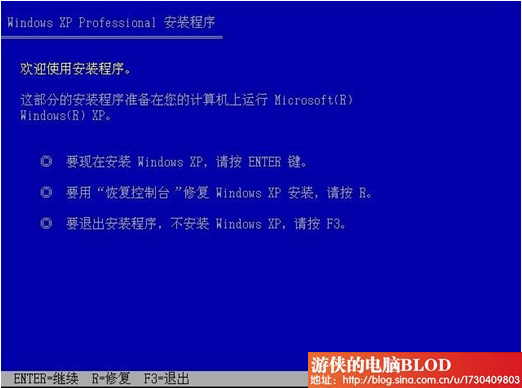
以上有三个选项，安装、修复和退出，以后如果XP遇到启动等问题就可以使用修复选项进行修复，现在我们需要全新安装XP故选择第一项，回车即可。
2、出现Windows XP 许可协议接受，如下图：
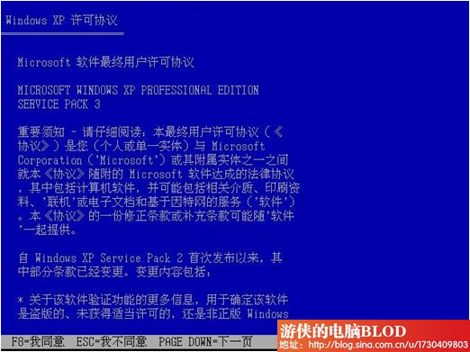
3、按下键盘上面的F8同意，进入下一屏：

这里也有三个选项：安装（回车键）、创建分区（按C字母键）、删除分区（按D字母键），如果各位的磁盘已经分好区，就不需要再次创建或删除了，上图是未划分空间，游侠需要创建两个分区，只需要按下C键开始利用空闲空间创建分区。
4、创建分区界面如下图，只需要输入分区大小并回车即可创建一个分区，如果您不需要创建，请直接在跳过本步骤：
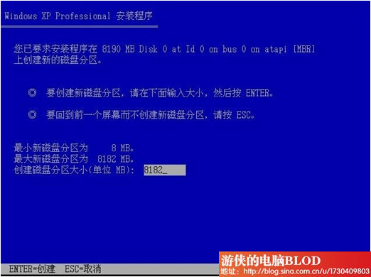
5、游侠连续创建了两个分区，最终如下图（所以如果大家原来已经有了分区，可能效果跟本图类似）：
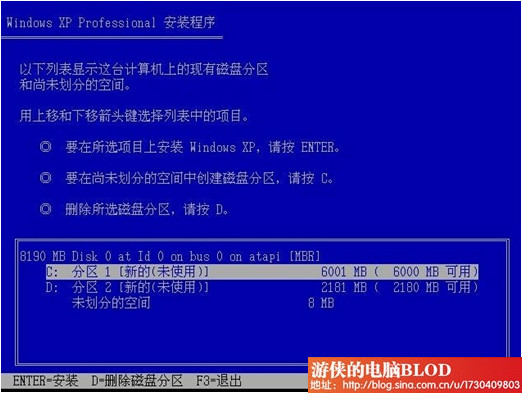
6、游侠用键盘上下键选择安装在C盘，（注：请再次确认安装盘没有重要数据，如有请退出安装进行备份）。选择C盘后回车即可，如下图：
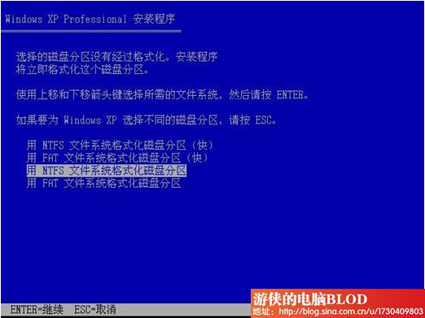
这里问我们选择安装分区的分区格式，NTFS或FAT都可以，游侠选择NTFS，然后回车。
7、这时，安装程序将会格式化C盘，我们只需要等待格式化完成即可，格式化完成后会开始复制安装文件，如下图：
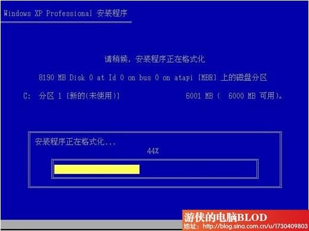
8、复制完安装文件之后，安装程序会自动重启机子，进入界面安装模式，如下图：

9、到这里，我们要等一会儿，跟各位的机子速度有关系，XP安装还是比较快的，安装过程中会陆续弹出如下窗口，我们需要根据提示进行设置或选择，下图是区域和语言选项，点击下一步即可：
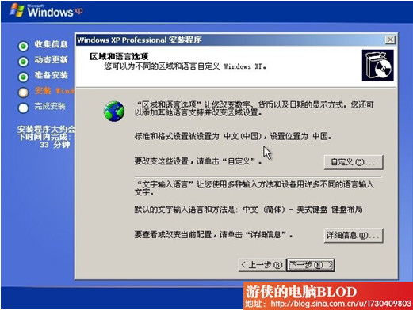
10、输入您的姓名和单位，随便写就可以了。如下图，再点击下一步：
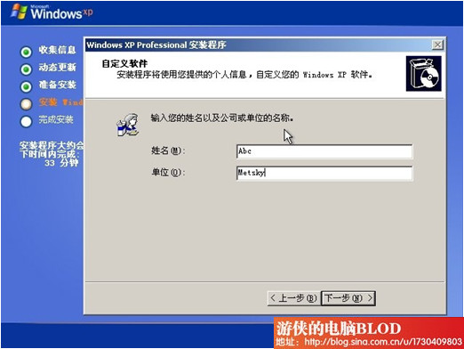
11、为Windows XP输入产品密钥，XP安装跟Windows 7安装不同，不输入密钥是别想进入下一步的，输入完成后点击下一步，如下图：
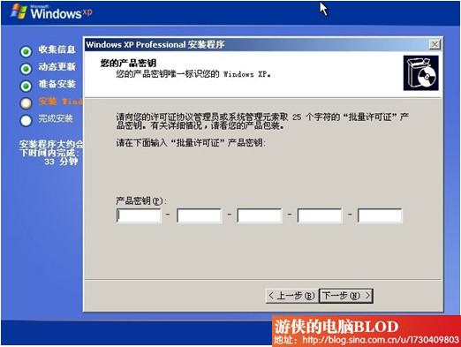
12、设置计算机名和系统管理员密码（如下图），请牢记这个管理员密码，后续维护或登录需要使用：
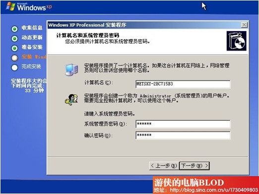
13、设置日期和时间，如下图，点击下一步就可以了：
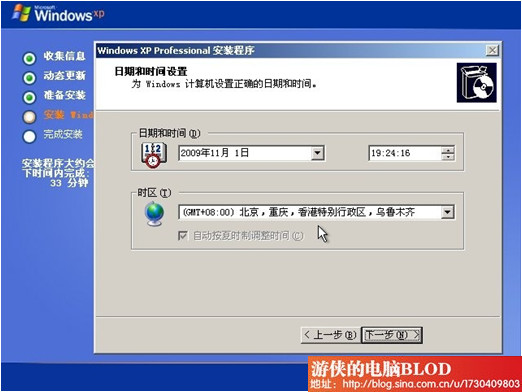
14、接着开始安装网络，稍等片刻就会弹出如下设置窗口，点击典型设置就可以了，下一步：
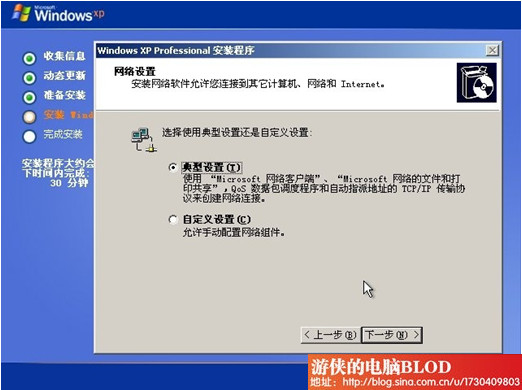
15、设置工作组或计算机域，为了方便，我们选择第一个，不在网络上，先安装完了再说。下一步：
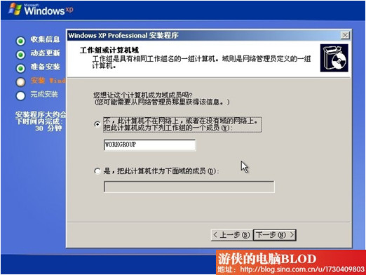
16、点过上面的下一步之后，就等待复制文件、删除临时文件等安装完成，完成后会自动重启机子，再次进入设置屏幕分辨率，如下图：
1
以上提示，只需要确定即可，这时候会在左上角位置有个设置窗口，如下图，只需要点击确定即可，如果您看不到下图说明您的显示器太老了，不过也没关系，30秒后，系统会自动跳过本界面（分辨率将会设置很低），继续安装：
2图
17、接下来，对XP进行一些初始配置，第一屏比尔盖茨感谢您使用Windows XP，点击下一步：
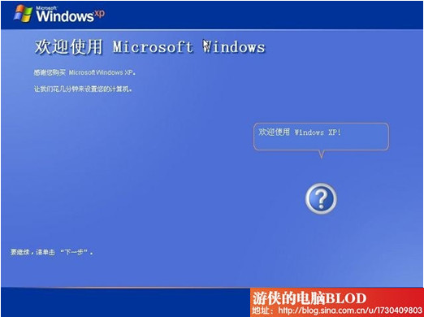
18、防火墙设置，我们选择现在不启用，进入后也可以再改回来，都没关系，下一步：
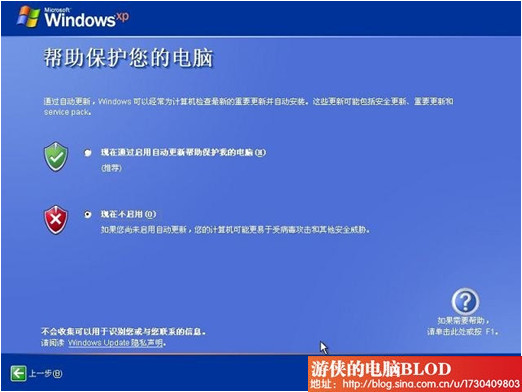
19、网络连接设置，选择否即可，也可以跳过，下一步：
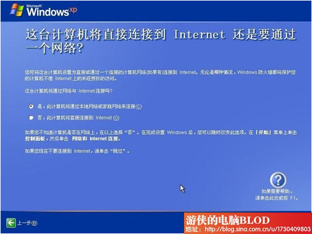
20、现在是否进行注册，这里我们也选择否，下一步：
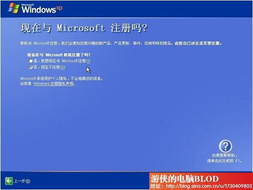
21、为计算机创建一个管理员账户，稍后再次重启就是以这个账户登录的。下一步：
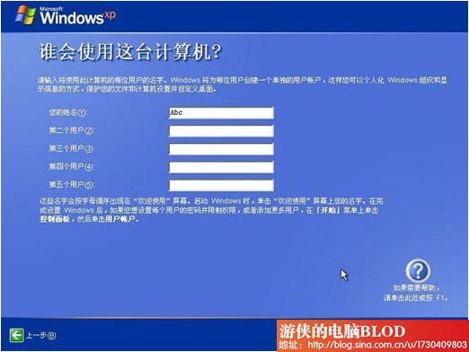
22、配置完成，点击完成，然后系统会自动重启：
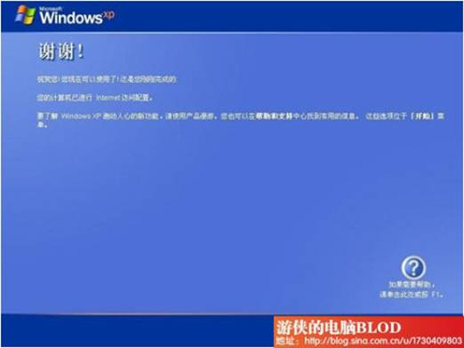
23、重启后进入XP的界面如下图：
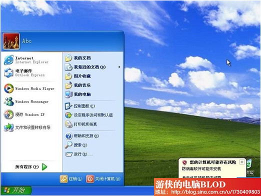
24、到这里就已经安装完毕了，接下来需要检查“控制面板”——“系统”——“硬件”——设备管理器，里看看有多少黄色警示，我们最关注网卡，如果网卡没有驱动，那么这时候是无法连接网络的，就需要使用随机光盘或主板自带驱动光盘或U盘备份的网卡驱动进行安装。